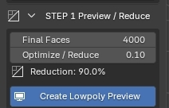
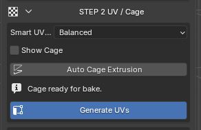
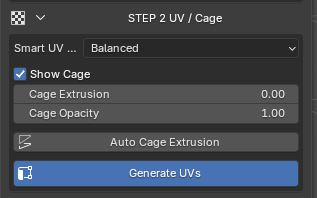
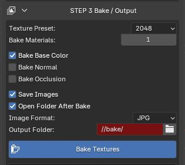

Guida manuale
Usa questa guida quando vuoi seguire ScanReady passo dopo passo, invece di usare One Click Bake.
Il workflow manuale ti permette di controllare separatamente riduzione, UV, cage e bake. È utile quando vuoi decidere con più precisione quanto ottimizzare la mesh, come generare le UV e quali texture creare.
Step 1 - Crea la preview low-poly
- Seleziona la scansione high-poly nel viewport di Blender.
- Apri STEP 1 Preview / Reduce.
- Regola Optimize / Reduce o Final Faces se vuoi una mesh più leggera o più dettagliata.
- Clicca Create Low-poly Preview.
ScanReady pulisce la scansione, crea una copia ottimizzata e genera una preview low-poly non distruttiva. La scansione high-poly originale resta intatta e viene usata come sorgente per UV, cage e bake.
Quando la preview ti sembra corretta, passa a Step 2 - UV / Cage.
Create Low-poly Preview

Step 2 - Genera UV e controlla il cage
- Parti dalla preview low-poly creata nello Step 1.
- Apri STEP 2 UV / Cage.
- Clicca Generate UVs.
ScanReady crea un nuovo layout UV sulla mesh ottimizzata. Questo prepara l'asset per ricevere le texture bake sulla nuova superficie low-poly.
Dopo le UV, prepara il cage per il bake:
- usa Auto Cage Extrusion se vuoi una stima automatica;
- regola Cage Extrusion se devi correggere manualmente la distanza;
- quando il cage è verde e copre tutta la mesh high-poly, puoi procedere con lo Step 3.
Generate UVs

Show Cage / Cage Controls

Step 3 - Esegui il bake
- Apri STEP 3 Bake / Output.
- Scegli Texture Preset / Texture Size.
- Scegli quanti Bake Materials usare.
- Attiva le mappe che vuoi generare, per esempio Bake Base Color, Bake Normal Map, Bake Roughness Map o Bake Occlusion Map.
- Clicca Bake Textures.
ScanReady esegue il bake una texture alla volta, collega le texture generate al materiale finale e crea un asset più leggero pronto per realtime, VR, videogame, AR e scene interattive.
Nota: la spunta Bake Roughness Map viene mostrata solo se il materiale high-poly ha un input Roughness collegato. Se non c'è una roughness collegata, ScanReady non può trasferirla e la spunta non viene mostrata.
Prima di cliccare Bake Textures, controlla che il cage copra la scansione high-poly. Se il cage è troppo piccolo, possono comparire aree nere, dettagli mancanti o proiezioni errate.
Bake Textures

Se vuoi ottimizzare di più
Puoi tornare indietro in qualsiasi momento.
Se sei già nello Step 2 o nello Step 3 e ti accorgi che la mesh è ancora troppo pesante, torna a Step 1 - Preview / Reduce, abbassa Final Faces o Optimize / Reduce, poi clicca di nuovo Create Low-poly Preview.
Dopo aver ricreato la preview, continua di nuovo in avanti:
- torna a Step 2 - UV / Cage;
- clicca di nuovo Generate UVs;
- controlla il cage;
- torna a Step 3 - Bake / Output;
- clicca Bake Textures.
Il bake dovrebbe sempre usare la mesh UV ottimizzata più recente.
Quando usare le pagine Step dettagliate
Questa pagina ti dice cosa premere e in quale ordine.
Per capire meglio ogni fase, usa le pagine dedicate:
- Step 1 - Preview / Reduce per Adaptive Reduce, Optimize / Reduce, Final Faces e preview.
- Step 2 - UV / Cage per Smart UV Project, checker, cage e Auto Cage Extrusion.
- Step 3 - Bake / Output per texture size, bake materials, mappe bake, output e salvataggio immagini.